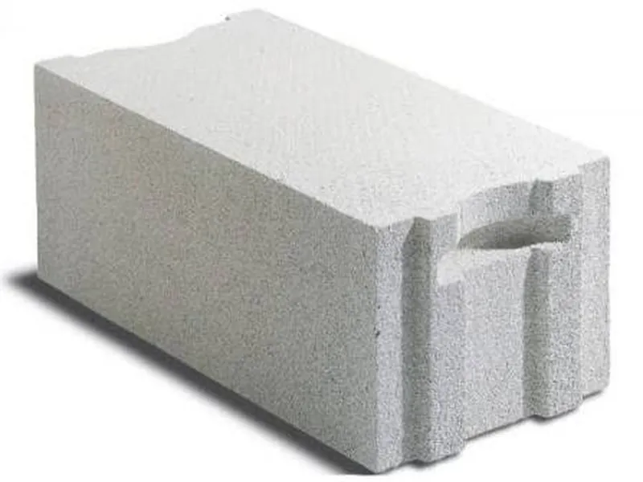

Газоблок — тёплый каменный дом за разумные деньги
Автоклавный газобетон: миллионы воздушных пор в минеральном камне. Самый доступный по цене каменный материал — и при этом один из самых тёплых.

Что такое газоблок
Смесь цемента, кварцевого песка и извести «поднимается» как тесто на дрожжах: алюминиевая пудра реагирует с известью и насыщает массу водородными пузырьками. Затем блок режут на пилорамах и выдерживают в автоклаве под давлением — получается прочный минеральный «воздушный шоколад», который в 3–4 раза легче кирпича и почти не проводит тепло.
Преимущества
Почему заказчики выбирают газоблок
- 01
Тёплый без утеплителя
Блок D400 толщиной 375–400 мм проходит по нормам Подмосковья без дополнительного утепления — счёт за отопление приятно удивляет.
- 02
Лёгкий — фундамент дешевле
В 3–4 раза легче кирпича: достаточно экономичной ленты или плиты, нагрузка на основание минимальна.
- 03
Кладка как конструктор
Точная геометрия и крупный формат: клей наносится гребёнкой, шов всего 2–3 мм, «мостики холода» практически исключены.
- 04
Режется пилой
Арки, эркеры, каналы под розетки и трубы — всё делается прямо на объекте обычной ножовкой, без пыли и спецоборудования.
- 05
Не горит и «дышит»
Минеральный состав: предел огнестойкости до REI 240, а паропроницаемость удерживает в доме здоровый микроклимат.
- 06
Лучшая цена каменного дома
Метр стены из газоблока дешевле кирпича и керамоблока, а «под ключ» дом строится от 3–4 месяцев.
Сравнение материалов
Газоблок против керамоблока и кирпича
Ориентировочные значения для внешней стены одного теплового сопротивления.
| Параметр | Газоблок | Керамический блок | Кирпич |
|---|---|---|---|
| Толщина стены для Подмосковья | 37,5–40 см | 38–44 см | 76–90 см |
| Вес 1 м² стены | ~200 кг | ~300 кг | ~900 кг |
| Нужна ли защита фасада | обязательна | по желанию | по желанию |
| Влагостойкость | низкая | высокая | высокая |
| Скорость кладки | высокая | высокая | низкая |
| Срок службы | 60–80 лет | 100+ лет | 150+ лет |
| Цена материала | ниже | средняя | выше |
Газоблок выигрывает в цене и весе, керамоблок — во влагостойкости и «необслуживаемости» фасада, кирпич — в статусе, но проигрывает в толщине и бюджете. Для постоянного проживания чаще всего выбирают между первыми двумя.
Как мы строим
Этапы строительства дома из газоблока
Этап 1
Проект и экономичный фундамент
Газоблок лёгкий — достаточно утеплённой ленты или плиты. Тип считаем по грунту на бесплатном выезде инженера.
Этап 2
Первый ряд и кладка на клей
По гидроизоляции выставляем первый ряд на раствор, дальше — клей-гребёнка с швом 2–3 мм. Геометрия — по лазеру.
Этап 3
Армирование кладки
Каждые 3–4 ряда — армосетка в штробы, проёмы — заводские перемычки. Так стены не трещат и держат проёмы любых размеров.
Этап 4
Армопояс и перекрытия
По верху стен — монолитный железобетонный пояс: он равномерно принимает перекрытия и кровлю. Обязательный этап для газобетона.
Этап 5
Кровля и инженерка
Стропильная система, окна, отопление и электрика. Коробка закрыта от осадков — работы идут в любую погоду.
Этап 6
Фасад и сдача с гарантией
Штукатурим или облицовываем фасад, подписываем акт и гарантийный талон на 5 лет. Дом «под ключ» — от 3–4 месяцев.
Важно понимать: газоблок «пьёт» влагу — до отделки храним блоки под навесом, а фасад обязательно закрываем штукатуркой или облицовкой. Армопояс и перемычки делаем без исключений: экономия на них приводит к трещинам. Всё это уже заложено в наших проектах.
Получить расчет домаВопросы и ответы
Частые вопросы о газоблоке
Почему газоблоку обязательно нужен фасад?
Газобетон гигроскопичен: открытая стена набирает влагу от дождя и теряет тепло. Штукатурка, плитка или вентфасад закрывают поры — и дом служит весь заявленный срок. Внутри помещения газоблок оставляют без отделки или красят паропроницаемой краской.
Можно ли класть газоблок зимой?
Да: до −5 °C работаем обычным клеем, ниже — зимним с противоморозными добавками и прогревом кладки. Сами блоки до монтажа храним под навесом в сухом штабеле.
Даёт ли дом из газоблока усадку?
Кладочной усадки у автоклавного газобетона нет — отделку можно начинать сразу после возведения коробки и кровли. Трещины появляются только от ошибок: пропущенного армопояса или перемычек. У нас эти этапы обязательны.
Чем газоблок хуже керамоблока?
Только влагостойкостью: керамике фасад не обязателен, газоблоку — да. Зато газоблок дешевле на 15–25%, легче и проще в обработке. Если бюджет важнее «необслуживаемости» — газоблок честный выбор.